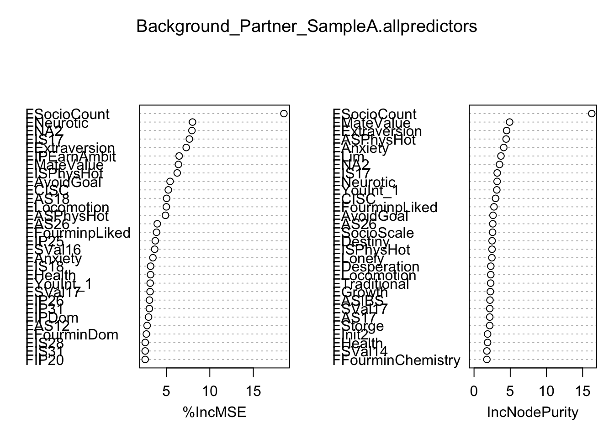
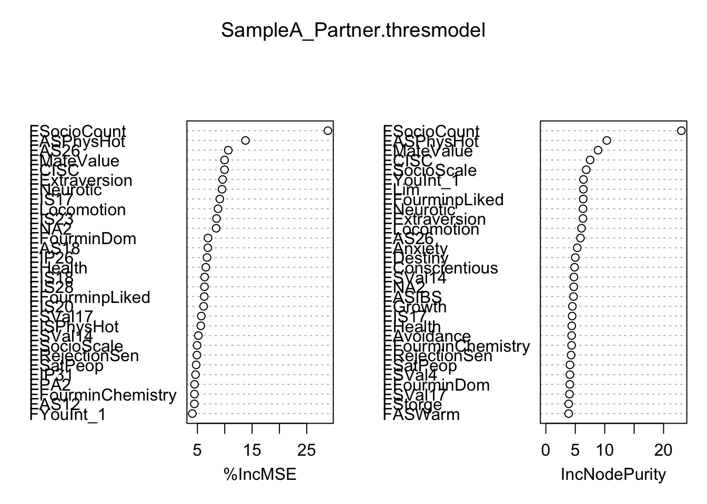
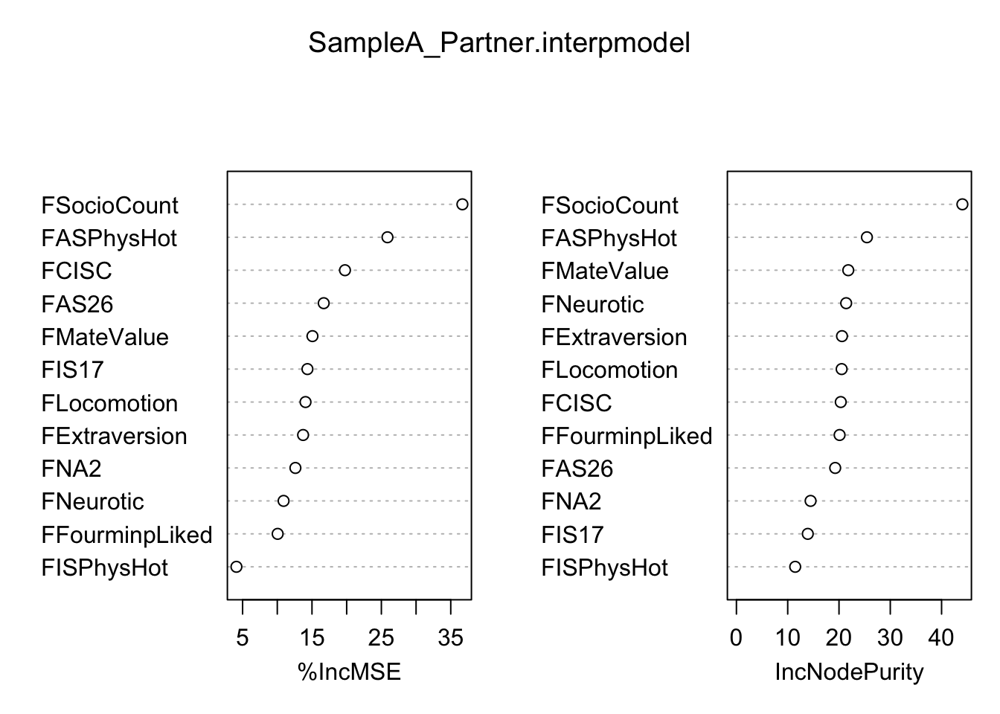
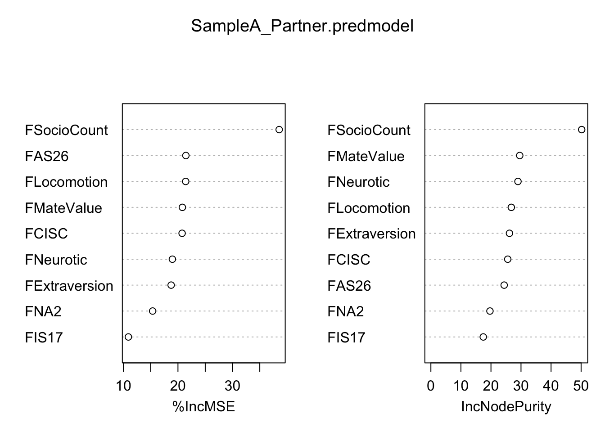
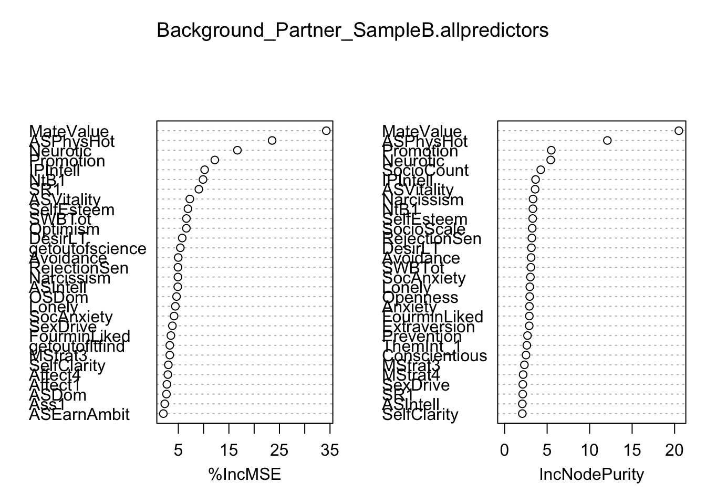
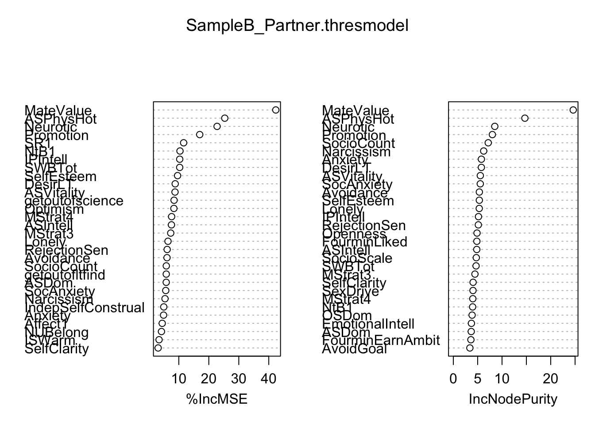
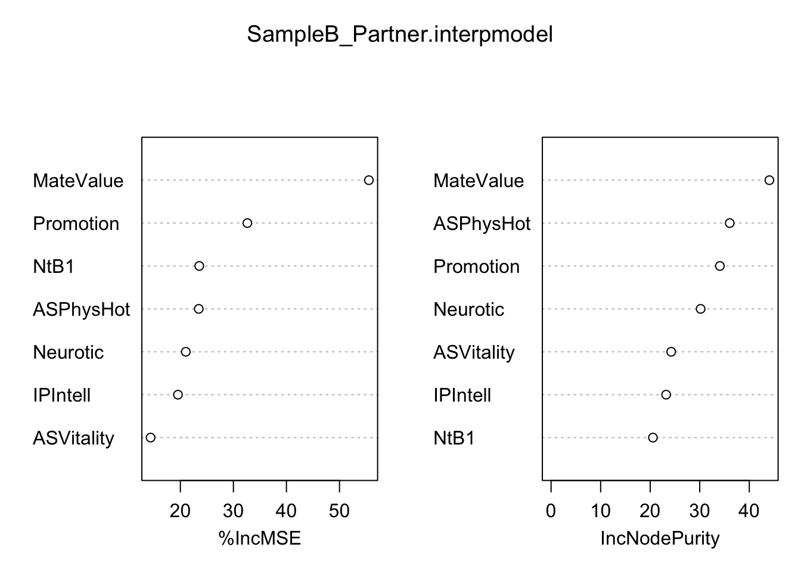
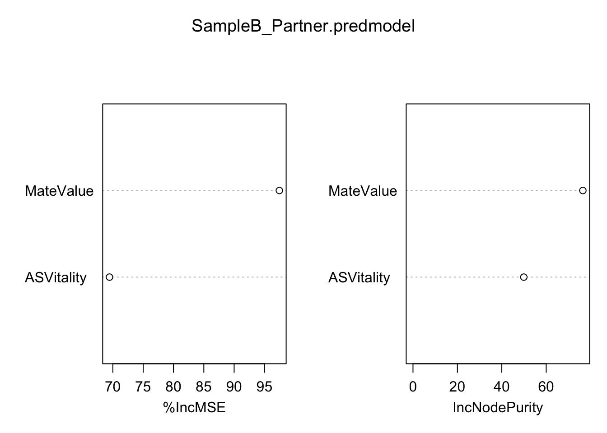

library(tree); library(randomForest)randomForest 4.7-1.2Type rfNews() to see new features/changes/bug fixes.library(VSURF)
#####Partner Analyses#####
##################Sample A#######################
#Level 2 Predicting Partner Desire
Background_Partner_SampleA <- read.csv(file="Level 2 predicting PartnerGM, Sample A.csv", header=T)
ncol(Background_Partner_SampleA)[1] 183set.seed(605)
SampleA_Partner_VSURF <- VSURF(DiggingPartnerGM~., data=Background_Partner_SampleA, na.action=na.omit, ntree=5000)Thresholding step
Estimated computational time (on one core): 17.1 sec.
|
| | 0%
|
|==== | 5%
|
|======= | 10%
|
|========== | 15%
|
|============== | 20%
|
|================== | 25%
|
|===================== | 30%
|
|======================== | 35%
|
|============================ | 40%
|
|================================ | 45%
|
|=================================== | 50%
|
|====================================== | 55%
|
|========================================== | 60%
|
|============================================== | 65%
|
|================================================= | 70%
|
|==================================================== | 75%
|
|======================================================== | 80%
|
|============================================================ | 85%
|
|=============================================================== | 90%
|
|================================================================== | 95%
|
|======================================================================| 100%
Interpretation step (on 29 variables)
Estimated computational time (on one core): between 2 sec. and 8.1 sec.
|
| | 0%
|
|== | 3%
|
|===== | 7%
|
|======= | 10%
|
|========== | 14%
|
|============ | 17%
|
|============== | 21%
|
|================= | 24%
|
|=================== | 28%
|
|====================== | 31%
|
|======================== | 34%
|
|=========================== | 38%
|
|============================= | 41%
|
|=============================== | 45%
|
|================================== | 48%
|
|==================================== | 52%
|
|======================================= | 55%
|
|========================================= | 59%
|
|=========================================== | 62%
|
|============================================== | 66%
|
|================================================ | 69%
|
|=================================================== | 72%
|
|===================================================== | 76%
|
|======================================================== | 79%
|
|========================================================== | 83%
|
|============================================================ | 86%
|
|=============================================================== | 90%
|
|================================================================= | 93%
|
|==================================================================== | 97%
|
|======================================================================| 100%
Prediction step (on 15 variables)
Maximum estimated computational time (on one core): 2.8 sec.
|
| | 0%
|
|===== | 7%
|
|========= | 13%
|
|============== | 20%
|
|=================== | 27%
|
|======================= | 33%
|
|============================ | 40%
|
|================================= | 47%
|
|===================================== | 53%
|
|========================================== | 60%
|
|=============================================== | 67%
|
|=================================================== | 73%
|
|======================================================== | 80%
|
|============================================================= | 87%
|
|================================================================= | 93%
|
|======================================================================| 100%Warning in VSURF.formula(DiggingPartnerGM ~ ., data = Background_Partner_SampleA, : VSURF with a formula-type call outputs selected variables
which are indices of the input matrix based on the formula:
you may reorder these to get indices of the original datasummary(SampleA_Partner_VSURF)
VSURF computation time: 24.7 secs
VSURF selected:
29 variables at thresholding step (in 18 secs)
15 variables at interpretation step (in 5.3 secs)
9 variables at prediction step (in 1.4 secs)SampleA_Partner_VSURF$varselect.thres [1] 4 46 106 147 6 49 51 33 56 2 22 139 9 100 43 103 153 73 31
[20] 7 148 178 96 16 62 70 172 77 131SampleA_Partner_VSURF$varselect.interp [1] 4 46 106 147 6 49 51 33 56 2 22 139 9 100 43SampleA_Partner_VSURF$varselect.pred[1] 4 46 106 147 49 33 139 100 43#Sample A Partner model, no variable selection
set.seed(62)
Background_Partner_SampleA.allpredictors<- randomForest(DiggingPartnerGM~., data=Background_Partner_SampleA, importance=T, na.action=na.omit, ntree=5000)
Background_Partner_SampleA.allpredictors
Call:
randomForest(formula = DiggingPartnerGM ~ ., data = Background_Partner_SampleA, importance = T, ntree = 5000, na.action = na.omit)
Type of random forest: regression
Number of trees: 5000
No. of variables tried at each split: 60
Mean of squared residuals: 1.528899
% Var explained: 4.05importance(Background_Partner_SampleA.allpredictors) %IncMSE IncNodePurity
Gender 0.92497933 0.1121258
FAnxiety 3.46014923 4.1013506
FAvoidance 2.47864962 1.4479824
FSocioCount 18.51544963 16.2573345
FSocioScale 1.58163349 2.5600877
FMateValue 6.39349244 4.9104126
FASIBS 2.19838187 2.2003569
FASIHS -1.22680645 1.5678146
FLim 1.10268275 3.7176879
FTraditional -1.13016804 2.2920984
FSexDrive -1.82893575 0.8955858
FConservatism -0.53323707 0.9988810
FPartnerConserv -2.48944664 0.9356525
FRecipLike -0.20522210 1.1793072
FDesperation -1.00564279 2.3148289
FDestiny 2.29431013 2.4930434
FGrowth 0.84496597 2.2516908
FSelfClarity -2.00076673 1.5112822
FIdealSelfClarity -4.86784571 1.4278958
FNeedBelong 1.20857068 1.5229239
FApproachGoal -0.06214407 1.0327268
FAvoidGoal 5.43542834 2.6208405
FForgiveness -2.12767760 1.5039676
FLonely -0.49597926 2.4651957
FSelfEsteem -1.12839422 1.1790560
FSelfControl -0.77168354 1.0195173
FSWBTot 0.47292485 1.6322796
FSelfRespect -1.63715977 1.3567989
FEntitlement -2.63237979 1.2888493
FRelatSelfConstrual -0.96930145 1.0576852
FIndepSelfConstrual 1.06755530 1.1733318
FRISC -0.68647862 1.0188224
FCISC 5.23097964 2.9725712
FRejectionSen 0.54693616 1.7510416
FIDSTot 0.14344250 1.0001586
FWITot -0.87032293 1.1594533
FISWTot -2.13509484 1.6468656
FComTot 0.70583960 1.6778406
FNarcissism -1.34625193 1.1805557
FPromotion -3.09109018 0.8928366
FPrevention 0.66028864 0.8894309
FEmoExpression 0.68196728 0.8647193
FLocomotion 5.00455999 2.3094297
FAssessment -1.94869596 1.3429223
FCapitalization -2.24003690 0.8684535
FExtraversion 7.28807430 4.4997577
FAgreeable -3.46250286 0.9635760
FConscientious -0.25078554 1.7101411
FNeurotic 8.01156478 3.1869726
FOpenness 0.81023213 0.7806061
FASPhysHot 4.90380660 4.4294466
FASEarnAmbit -1.27358209 1.3918790
FASVitality 2.26089261 1.2219943
FASWarm -0.35417193 1.4726240
FASDom -2.31156056 0.9678429
FISPhysHot 6.25288576 2.4835188
FISEarnAmbit -0.17788903 0.6908392
FISVitality -1.15503221 0.5993593
FISWarm -1.96594058 0.6778004
FISDom 1.13263942 0.7562061
FIPPhysHot 1.38449765 0.7351302
FIPEarnAmbit 6.47806521 0.9485361
FIPVitality 0.32699388 0.4860429
FIPWarm 1.07532261 0.6211015
FIPDom 2.95936850 1.4328183
FFourminPhysHot -1.49655949 1.6212882
FFourminEarnAmbit -1.23983168 1.0114425
FFourminVitality -0.42572243 0.7189904
FFourminWarm -2.71663264 1.1343448
FFourminDom 2.70620403 1.5445092
FFourminLiked 0.22817271 1.0627395
FFourminChemistry 2.14319037 1.7718235
FFourminpLiked 3.87606293 2.7549434
FDesirSer 0.27291588 0.9852115
FDesirCas -1.22496602 1.0665962
FDesirOne -1.99411150 0.6698248
FSatPeop 1.65713666 1.3958948
FYouInt_1 3.14725082 3.1471043
FThemInt_1 -0.46542645 1.4444511
FInit1 -0.13977850 1.1297519
FInit2 -0.07104829 1.8700760
FInit3 -3.09570291 0.9313215
FMStrat1 -0.24099035 0.8878391
FMStrat2 0.71944033 0.5008474
FMStrat3 -2.04888594 0.6732878
FMStrat4 -3.71939180 0.6890329
FMStrat5 0.30216498 1.0087192
FMStrat6 0.01041840 0.9267660
FMStrat7 -1.47619556 0.4918834
FMStrat8 -2.82987706 0.4580616
FGender1 1.20783736 1.0995814
FGender2 -3.01613332 0.5248972
FSexOr 1.52385948 1.1312912
FPragma -1.99566722 0.8579104
FLudus -1.54797806 1.0309681
FStorge -0.16947768 2.1642531
FMyStatus 0.69502803 0.6623593
FReci3 -0.27196691 0.8305647
FReci4 -1.94510232 0.7231977
FHealth 3.18852226 1.8685794
FSleep -1.09679152 0.6562109
FPA1 2.45438754 1.4135455
FPA2 2.27884514 1.4716596
FPA3 -0.49939783 1.2821126
FNA1 -2.85327168 0.7671301
FNA2 7.94459883 3.5191728
FNA3 -2.85499345 0.4871126
FSVal1 -0.45665904 0.5625723
FSVal2 0.02791128 0.3206989
FSVal3 0.01281829 0.9861578
FSVal4 1.10940574 0.8115317
FSVal5 1.62290591 0.5168107
FSVal6 1.25304092 0.4566890
FSVal7 -0.07341535 0.7042231
FSVal8 -0.61141815 0.7312753
FSVal9 -2.80977699 0.7890337
FSVal10 -0.16713166 0.9970255
FSVal11 -1.98352173 0.7243570
FSVal12 0.63052912 0.7602910
FSVal13 -1.57342950 0.5499839
FSVal14 -0.09936879 1.7752348
FSVal15 -1.12428977 0.5617694
FSVal16 3.66258424 0.9976893
FSVal17 3.13402611 2.1719543
FAS12 2.79421199 1.1959119
FAS13 -1.63329622 0.5972835
FAS14 -0.23963082 1.2266434
FAS15 -2.32243655 0.5254235
FAS16 0.54071212 0.4824312
FAS17 1.29414869 2.1704893
FAS18 5.03385201 1.2242872
FAS19 -1.42722720 0.7425393
FAS20 -2.08377075 0.3952860
FAS21 0.45106504 0.6810168
FAS22 0.86109884 0.9049971
FAS23 -1.87015591 0.9678494
FAS24 -0.94577694 0.8125058
FAS25 -0.60648126 0.5693221
FAS26 3.96057504 2.5880037
FAS27 -1.26817971 0.7172663
FAS28 1.28784657 0.8170800
FAS29 -2.39559222 1.1621547
FAS30 1.22259441 0.6501114
FAS31 0.05154411 0.5057463
FAS32 -1.61758971 0.5322954
FIS12 -0.69871106 0.3499284
FIS17 7.65006130 3.1999614
FIS18 3.19405581 0.8298634
FIS19 0.53753041 0.6085396
FIS20 1.50148502 0.6525511
FIS21 0.07720240 0.3830348
FIS22 -1.24414602 0.4668127
FIS23 2.45748801 1.2139592
FIS24 1.63050891 0.7453900
FIS25 0.45750290 0.3570197
FIS26 1.21155693 0.4656387
FIS27 0.48215029 0.7240177
FIS28 2.57737694 0.8884234
FIS29 -2.95201866 0.7164910
FIS30 -0.36085180 0.2407576
FIS31 2.57157841 0.4875469
FIS32 -0.82265961 0.4802994
IP12 0.80611961 0.3413154
FIP17 1.58515543 1.1001173
FIP18 -0.20144028 0.5890737
FIP19 -2.00268035 0.3548722
FIP20 2.57053926 0.4006883
FIP21 1.93557837 0.4862007
FIP22 1.14326998 0.6484580
FIP23 -0.19688599 0.4977869
FIP24 1.19189278 0.5208159
FIP25 3.73238252 1.0015758
FIP26 3.06444082 1.1364841
FIP27 0.80477278 0.5847295
FIP28 0.13802714 0.7743843
FIP29 1.12859507 1.3421100
FIP30 -0.61663224 0.2330862
FIP31 3.05070235 1.0708634
FIP32 1.48762711 0.7463940
F4min12 0.53994174 0.6900483
statustot -0.43264077 1.3759369
attracttot -3.79352929 0.8008107varImpPlot(Background_Partner_SampleA.allpredictors)
#Sample A Partner model, threshold variables
SampleA_PartnerGM.thresdata <- Background_Partner_SampleA[c(4,46,147,106,6,49,51,33,139,56,73,43,22,16,2,103,100,70,124,131,153,102,130,5,78,62,31,173,81,178,77,72,9,96,172,65,148,125,17,158,150,54,7,34,3,53,175,141,121,164,176,93,165,119,48,123,57,111,20,183)]
set.seed(605)
SampleA_Partner.thresmodel <- randomForest(DiggingPartnerGM~., data=SampleA_PartnerGM.thresdata, importance=T, na.action=na.omit, ntree=5000)
SampleA_Partner.thresmodel
Call:
randomForest(formula = DiggingPartnerGM ~ ., data = SampleA_PartnerGM.thresdata, importance = T, ntree = 5000, na.action = na.omit)
Type of random forest: regression
Number of trees: 5000
No. of variables tried at each split: 19
Mean of squared residuals: 1.355909
% Var explained: 19.15importance(SampleA_Partner.thresmodel) %IncMSE IncNodePurity
FSocioCount 28.86279184 23.023535
FExtraversion 9.61471202 6.308898
FIS17 9.10014550 4.468586
FNA2 8.42947163 4.742225
FMateValue 9.96428159 8.867311
FNeurotic 9.50928400 6.310534
FASPhysHot 13.79208679 10.356428
FCISC 9.96027612 7.526822
FAS26 10.65374164 5.881823
FISPhysHot 5.61785954 3.611325
FFourminpLiked 6.25504239 6.352313
FLocomotion 8.76692089 6.061353
FAvoidGoal 1.56024887 3.665856
FDestiny 3.13085100 5.008239
FAnxiety 1.55080410 5.338855
FPA2 4.47633329 3.123659
FHealth 6.54759964 4.403427
FFourminDom 6.94239790 4.072493
FSVal17 5.71198280 4.016411
FAS18 6.91490394 3.742381
FIS23 8.49474469 3.120138
FPA1 1.29785449 3.161100
FAS17 3.64333340 3.365856
FSocioScale 4.94827567 6.867122
FYouInt_1 4.07411796 6.391164
FIPEarnAmbit -0.10403783 2.481644
FIndepSelfConstrual 1.93310172 2.637074
FIP26 6.76441311 3.413203
FInit2 3.64943594 3.722826
FIP31 4.65732844 2.342246
FSatPeop 4.77486646 4.099914
FFourminChemistry 4.46215555 4.376387
FLim 2.03061878 6.376736
FStorge 4.02537918 3.881241
FIP25 2.75974425 2.178434
FIPDom 3.19349519 3.081565
FIS18 6.32370473 2.667432
FAS12 4.44489332 3.172199
FGrowth 2.30069228 4.509204
FIS28 6.29402898 2.034320
FIS20 6.13609540 2.512216
FASWarm 3.46035900 3.874032
FASIBS 0.08853181 4.703480
FRejectionSen 4.91279477 4.293935
FAvoidance 3.53908043 4.377957
FASVitality 2.42695325 3.170733
FIP28 1.74101835 1.660630
FAS28 0.35798634 1.869813
FSVal14 5.17443752 4.774990
FIP17 0.19498058 1.836586
FIP29 -0.20311732 3.375199
FSexOr 0.60145404 2.040462
FIP18 0.38171346 1.713965
FSVal12 0.28473927 2.682901
FConscientious 1.48659581 4.881720
FSVal16 -0.31441520 1.713851
FISEarnAmbit 1.82301588 2.250513
FSVal4 2.37571046 4.083100
FNeedBelong 0.21536179 3.865947varImpPlot(SampleA_Partner.thresmodel)
#Sample A Partner model, interpretation variables
SampleA_PartnerGM.interpdata <- Background_Partner_SampleA[c(4,46,147,106,6,49,51,33,139,56,73,43,183)]
set.seed(605)
SampleA_Partner.interpmodel <- randomForest(DiggingPartnerGM~., data=SampleA_PartnerGM.interpdata, importance=T, na.action=na.omit, ntree=5000)
SampleA_Partner.interpmodel
Call:
randomForest(formula = DiggingPartnerGM ~ ., data = SampleA_PartnerGM.interpdata, importance = T, ntree = 5000, na.action = na.omit)
Type of random forest: regression
Number of trees: 5000
No. of variables tried at each split: 4
Mean of squared residuals: 1.313963
% Var explained: 21.6importance(SampleA_Partner.interpmodel) %IncMSE IncNodePurity
FSocioCount 36.677151 44.05758
FExtraversion 13.718609 20.58444
FIS17 14.344808 13.91383
FNA2 12.610187 14.46204
FMateValue 15.069147 21.80547
FNeurotic 10.908390 21.39789
FASPhysHot 25.879265 25.44270
FCISC 19.756178 20.34271
FAS26 16.691666 19.25853
FISPhysHot 4.110338 11.46019
FFourminpLiked 10.053945 20.11749
FLocomotion 14.069032 20.51565varImpPlot(SampleA_Partner.interpmodel)
#Sample A Partner model, prediction variables
SampleA_PartnerGM.preddata <- Background_Partner_SampleA[c(4,46,147,106,6,49,33,139,43,183)]
set.seed(605)
SampleA_Partner.predmodel <- randomForest(DiggingPartnerGM~., data=SampleA_PartnerGM.preddata, importance=T, na.action=na.omit, ntree=5000)
SampleA_Partner.predmodel
Call:
randomForest(formula = DiggingPartnerGM ~ ., data = SampleA_PartnerGM.preddata, importance = T, ntree = 5000, na.action = na.omit)
Type of random forest: regression
Number of trees: 5000
No. of variables tried at each split: 3
Mean of squared residuals: 1.30947
% Var explained: 21.87importance(SampleA_Partner.predmodel) %IncMSE IncNodePurity
FSocioCount 38.55753 50.19469
FExtraversion 18.75067 26.15945
FIS17 10.90899 17.43793
FNA2 15.35695 19.65874
FMateValue 20.80873 29.57006
FNeurotic 18.97595 28.98534
FCISC 20.75863 25.58222
FAS26 21.44903 24.39411
FLocomotion 21.41199 26.77472varImpPlot(SampleA_Partner.predmodel)
##################Sample B#######################
Background_Partner_SampleB <- read.csv(file="Level 2 predicting PartnerGM, Sample B.csv", header=T)
Background_Partner_SampleB$getoutoffun <- factor(Background_Partner_SampleB$getoutoffun)
Background_Partner_SampleB$getoutoftry <- factor(Background_Partner_SampleB$getoutoftry)
Background_Partner_SampleB$getoutofmeet <- factor(Background_Partner_SampleB$getoutofmeet)
Background_Partner_SampleB$getoutofscience <- factor(Background_Partner_SampleB$getoutofscience)
Background_Partner_SampleB$getoutofltfind <- factor(Background_Partner_SampleB$getoutofltfind)
Background_Partner_SampleB$getoutofstfind <- factor(Background_Partner_SampleB$getoutofstfind)
ncol(Background_Partner_SampleB)[1] 113set.seed(605)
SampleB_Partner_VSURF <- VSURF(DiggingPartnerGM~., data=Background_Partner_SampleB, na.action=na.omit, ntree=5000)Thresholding step
Estimated computational time (on one core): 14.8 sec.
|
| | 0%
|
|==== | 5%
|
|======= | 10%
|
|========== | 15%
|
|============== | 20%
|
|================== | 25%
|
|===================== | 30%
|
|======================== | 35%
|
|============================ | 40%
|
|================================ | 45%
|
|=================================== | 50%
|
|====================================== | 55%
|
|========================================== | 60%
|
|============================================== | 65%
|
|================================================= | 70%
|
|==================================================== | 75%
|
|======================================================== | 80%
|
|============================================================ | 85%
|
|=============================================================== | 90%
|
|================================================================== | 95%
|
|======================================================================| 100%
Interpretation step (on 28 variables)
Estimated computational time (on one core): between 1.4 sec. and 9.8 sec.
|
| | 0%
|
|== | 4%
|
|===== | 7%
|
|======== | 11%
|
|========== | 14%
|
|============ | 18%
|
|=============== | 21%
|
|================== | 25%
|
|==================== | 29%
|
|====================== | 32%
|
|========================= | 36%
|
|============================ | 39%
|
|============================== | 43%
|
|================================ | 46%
|
|=================================== | 50%
|
|====================================== | 54%
|
|======================================== | 57%
|
|========================================== | 61%
|
|============================================= | 64%
|
|================================================ | 68%
|
|================================================== | 71%
|
|==================================================== | 75%
|
|======================================================= | 79%
|
|========================================================== | 82%
|
|============================================================ | 86%
|
|============================================================== | 89%
|
|================================================================= | 93%
|
|==================================================================== | 96%
|
|======================================================================| 100%
Prediction step (on 6 variables)
Maximum estimated computational time (on one core): 0.7 sec.
|
| | 0%
|
|============ | 17%
|
|======================= | 33%
|
|=================================== | 50%
|
|=============================================== | 67%
|
|========================================================== | 83%
|
|======================================================================| 100%Warning in VSURF.formula(DiggingPartnerGM ~ ., data = Background_Partner_SampleB, : VSURF with a formula-type call outputs selected variables
which are indices of the input matrix based on the formula:
you may reorder these to get indices of the original datasummary(SampleB_Partner_VSURF)
VSURF computation time: 22 secs
VSURF selected:
28 variables at thresholding step (in 15.7 secs)
6 variables at interpretation step (in 5.9 secs)
2 variables at prediction step (in 0.4 secs)SampleB_Partner_VSURF$varselect.thres [1] 44 79 77 68 27 103 81 61 63 30 2 13 66 60 41 73 72 96 7
[20] 42 67 84 14 34 89 8 47 65SampleB_Partner_VSURF$varselect.interp[1] 44 79 77 68 27 103SampleB_Partner_VSURF$varselect.pred[1] 44 103#MSDS II Partner model, no selection variables
set.seed(62)
Background_Partner_SampleB.allpredictors<- randomForest(DiggingPartnerGM~., data=Background_Partner_SampleB, importance=T, na.action=na.omit, ntree=5000)
Background_Partner_SampleB.allpredictors
Call:
randomForest(formula = DiggingPartnerGM ~ ., data = Background_Partner_SampleB, importance = T, ntree = 5000, na.action = na.omit)
Type of random forest: regression
Number of trees: 5000
No. of variables tried at each split: 37
Mean of squared residuals: 1.070554
% Var explained: 15.45importance(Background_Partner_SampleB.allpredictors) %IncMSE IncNodePurity
gender -1.75425505 0.24999382
DesirLT 5.76999385 3.15252647
DesirST 0.18823733 1.30817923
getoutoffun -1.74892559 0.11061531
getoutoftry 0.20738648 0.04654712
getoutofmeet 0.81459302 0.02958571
getoutofscience 5.40217584 1.04171776
getoutofltfind 3.30880329 0.70965683
getoutofstfind -2.26787093 0.20694058
SatPeop -2.64954109 0.86521482
YouInt_1 -1.65143382 1.48581511
ThemInt_1 -2.62451418 2.61239524
MStrat3 3.30762149 2.32583143
MStrat4 1.65366266 2.17626232
Init1 -1.77572549 0.71592476
Init2 -2.30871572 1.16309424
Init3 0.38158255 0.92257327
ASI2 -3.04743627 1.09648581
ASI6 -1.56883780 1.29884767
SexOr -2.28211039 0.31612297
Pragma -1.46779600 1.97917777
Ludus -0.99474829 0.90413371
Storge 0.48859350 1.53638465
Status2 -1.79613461 0.92021988
Reci3 -3.41556697 0.83820737
Reci4 -2.48577279 1.18183301
NtB1 9.88634228 3.32449883
Sleep -1.45239984 1.08855522
NUBelong 1.87824386 1.67559161
SR1 9.05965275 2.12616139
Affect1 2.74033065 1.06094596
Affect2 -0.44914764 0.80778322
Affect3 0.09929635 1.94749274
Affect4 2.92778395 1.47391281
Loco1 -0.22950183 0.94816546
Ass1 2.31703122 0.94434559
HOC1 -1.10127850 0.61594524
v4minI8 -0.83396101 0.97276953
v4minI9 0.39631196 0.93462465
Anxiety -2.03216125 2.91676542
Avoidance 4.98367901 3.11489646
SocioCount 0.92921019 4.25006454
SocioScale 1.01596459 3.24683008
MateValue 34.26802150 20.49881706
GenderIdentity -0.72604068 1.29440857
Traditional -2.84135607 1.87924210
SexDrive 3.82922257 2.13648365
AdversarialBeliefs -2.21334097 1.20437020
EmotionalIntell 1.16695493 2.07505133
Conservatism -0.85491186 1.30616029
PartnerConserv -2.85148921 1.21961060
RecipLike -0.02283221 1.36527223
Desperation -1.50793532 1.77908379
Destiny -5.32545396 1.96005394
Growth -1.24870288 1.22340552
SelfClarity 3.02695305 2.08275702
ApproachGoal 0.98203225 1.36110026
AvoidGoal 0.94527286 1.50074677
Forgiveness 0.52497821 1.59870956
Lonely 4.41365344 2.96249371
SelfEsteem 6.90086046 3.29838215
SelfControl -2.19435966 1.16848576
SWBTot 6.60060192 3.08381629
RelatSelfConstrual -1.40786471 1.44044255
IndepSelfConstrual 1.53118803 1.55043102
RejectionSen 4.93139263 3.20502641
Narcissism 4.91668172 3.34089010
Promotion 12.21361239 5.48924330
Prevention -0.20076084 2.69057815
LoveBasis -0.47918236 1.77951174
RomBeliefs 0.51509031 1.51652862
SocAnxiety 4.15951360 3.03383742
Optimism 6.59159719 1.49292605
Extraversion -1.96167965 2.89418866
Agreeable -1.67377398 1.56467291
Conscientious 1.28130588 2.51731819
Neurotic 16.68677975 5.42074690
Openness 0.80747820 2.94646308
ASPhysHot 23.55304734 12.09092775
ASEarnAmbit 2.03841643 1.39545760
ASVitality 7.28084743 3.58745685
ASWarm 0.88808685 1.39422904
ASDom 2.65511266 1.98155884
ASIntell 4.89417684 2.08303560
ASNegative -0.05655514 1.54665378
ISPhysHot -3.63494454 1.00373161
ISEarnAmbit 0.70461697 0.58445548
ISVitality 1.10686888 0.83709314
ISWarm 1.69575933 1.14522233
ISDom -1.23680279 0.75946220
ISIntell -0.68548259 0.43257099
OSPhysHot 0.58242522 1.39224270
OSEarnAmbit -1.23501362 0.92387905
OSVitality -2.15471622 0.91838289
OSWarm 1.64993912 1.00689610
OSDom 4.65143464 2.03238634
OSIntell -1.34241762 0.88703628
IPPhysHot -2.23446873 1.31215194
IPEarnAmbit 0.09257128 1.51664633
IPVitality 0.34290365 0.68248721
IPWarm -0.95291651 0.94178366
IPDom -0.47773039 1.26935670
IPIntell 10.20290855 3.64221690
FourminPhysHot -2.23193870 1.35810265
FourminEarnAmbit 0.68903409 1.80321401
FourminVitality 0.66951192 1.27396832
FourminWarm -2.05979357 1.64808287
FourminDom 0.92717334 1.96612515
FourminIntell -0.41089615 1.20860139
FourminLiked 3.53089985 2.90583692
FourminChemistry -1.25205102 1.58370554
FourminpLiked -0.16897325 1.93177402varImpPlot(Background_Partner_SampleB.allpredictors)
#Sample B Partner model, threshold variables
SampleB_PartnerGM.thresdata <- Background_Partner_SampleB[c(44,79,77,68,27,81,103,61,30,63,2,72,66,13,60,7,73,67,42,41,84,96,110,47,14,89,83,34,8,65,49,29,56,31,80,23,43,40,88,36,78,105,33,93,39,57,58,113)]
set.seed(605)
SampleB_Partner.thresmodel <- randomForest(DiggingPartnerGM~., data=SampleB_PartnerGM.thresdata, importance=T, na.action=na.omit, ntree=5000)
SampleB_Partner.thresmodel
Call:
randomForest(formula = DiggingPartnerGM ~ ., data = SampleB_PartnerGM.thresdata, importance = T, ntree = 5000, na.action = na.omit)
Type of random forest: regression
Number of trees: 5000
No. of variables tried at each split: 15
Mean of squared residuals: 0.9776472
% Var explained: 24.37importance(SampleB_Partner.thresmodel) %IncMSE IncNodePurity
MateValue 42.3363333 24.616317
ASPhysHot 25.3266743 14.696524
Neurotic 22.7641576 8.513070
Promotion 16.9735042 8.017804
NtB1 10.3963720 3.961662
ASVitality 8.7389725 5.543955
IPIntell 10.3032371 5.166198
SelfEsteem 9.5908461 5.339662
SR1 11.6095371 3.034570
SWBTot 10.2973506 4.670625
DesirLT 8.7976571 5.757563
SocAnxiety 5.6487377 5.534886
RejectionSen 6.1180169 5.135780
MStrat3 7.3085246 4.439245
Lonely 6.3963921 5.321078
getoutofscience 8.4215496 1.635194
Optimism 8.3626922 3.334023
Narcissism 5.4062153 6.233370
SocioCount 5.8320154 7.167482
Avoidance 6.0682308 5.341782
ASIntell 7.5524792 4.814754
OSDom 1.6243404 3.857539
FourminLiked 3.0956302 4.834555
SexDrive 2.9463722 4.038735
MStrat4 7.6064805 4.001386
ISWarm 3.4197682 2.340378
ASDom 5.8069854 3.675763
Affect4 2.3021258 2.897507
getoutofltfind 5.8193249 1.436887
IndepSelfConstrual 4.9904336 3.260015
EmotionalIntell 2.0695954 3.715283
NUBelong 4.2195473 3.163097
SelfClarity 3.1103911 4.058627
Affect1 4.4688351 2.135659
ASEarnAmbit 2.5044501 3.005268
Storge 2.5533047 2.784011
SocioScale 0.7837391 4.716107
Anxiety 4.9165188 5.761782
ISVitality 0.9817137 1.693804
Ass1 2.1697366 2.317708
Openness -0.4594853 4.865991
FourminEarnAmbit 2.2820671 3.608146
Affect3 2.4380160 3.305039
OSEarnAmbit 3.0036960 2.337748
v4minI9 1.5890004 1.923752
ApproachGoal 0.4051671 2.742697
AvoidGoal 2.6360035 3.398682varImpPlot(SampleB_Partner.thresmodel)
#Sample B Partner model, interpretation variables
SampleB_PartnerGM.interpdata <- Background_Partner_SampleB[c(44,79,77,68,27,81,103,113)]
set.seed(605)
SampleB_Partner.interpmodel <- randomForest(DiggingPartnerGM~., data=SampleB_PartnerGM.interpdata, importance=T, na.action=na.omit, ntree=5000)
SampleB_Partner.interpmodel
Call:
randomForest(formula = DiggingPartnerGM ~ ., data = SampleB_PartnerGM.interpdata, importance = T, ntree = 5000, na.action = na.omit)
Type of random forest: regression
Number of trees: 5000
No. of variables tried at each split: 2
Mean of squared residuals: 0.9433688
% Var explained: 26.66importance(SampleB_Partner.interpmodel) %IncMSE IncNodePurity
MateValue 55.54167 44.05878
ASPhysHot 23.47018 36.05546
Neurotic 21.02827 30.18439
Promotion 32.63162 34.07179
NtB1 23.56439 20.55308
ASVitality 14.39036 24.23845
IPIntell 19.55007 23.21916varImpPlot(SampleB_Partner.interpmodel)
#Sample B Partner model, prediction variables
SampleB_PartnerGM.preddata <- Background_Partner_SampleB[c(44,81,113)]
set.seed(605)
SampleB_Partner.predmodel <- randomForest(DiggingPartnerGM~., data=SampleB_PartnerGM.preddata, importance=T, na.action=na.omit, ntree=5000)
SampleB_Partner.predmodel
Call:
randomForest(formula = DiggingPartnerGM ~ ., data = SampleB_PartnerGM.preddata, importance = T, ntree = 5000, na.action = na.omit)
Type of random forest: regression
Number of trees: 5000
No. of variables tried at each split: 1
Mean of squared residuals: 1.047444
% Var explained: 18.57importance(SampleB_Partner.predmodel) %IncMSE IncNodePurity
MateValue 97.45586 76.51096
ASVitality 69.44795 49.91414varImpPlot(SampleB_Partner.predmodel)